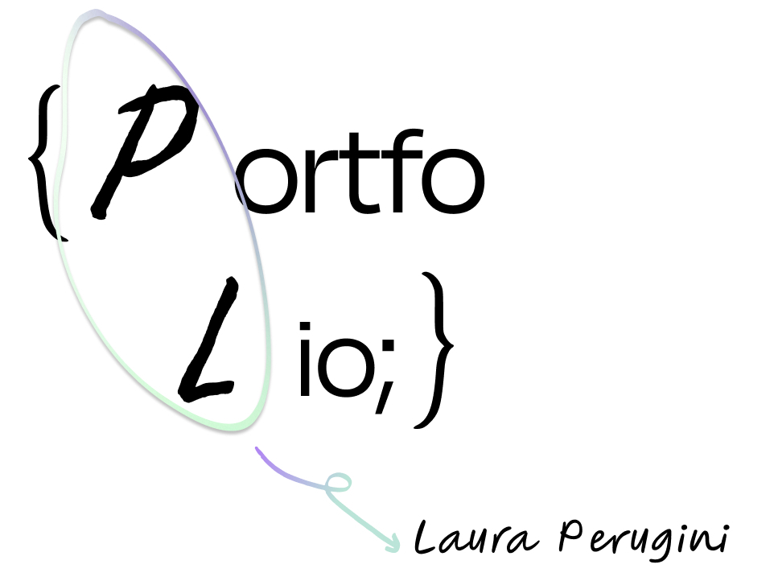

.Coder
My full name is Laura Perugini, but everyone calls me Lauri. I'm a mix of Czech and Italian backgrounds, with a deep-rooted love for art.
I got into design and coding when I was just 11. In Italy at that time, there was a program called MSN Messenger that allowed me to create a simple blog about myself using code, and I loved it! Even though I use less glitter in my designs now, I've kept my passion for coding and web design.
For a while, I lost my way, but as I studied art history, I realised I wanted to make something more concrete out of my love for creativity. This marked the beginning of my journey into UX/UI design! I really enjoy blending my creativity with problem-solving skills to create something worthwhile.
If I'm not at the computer, you'll probably find me wandering the city, visiting art galleries, or observing nature for inspiration. And if I'm not out and about, chances are I'm lost in a good book.
I understand that taking a chance on me might seem like a leap of faith at first, but I am excited about the opportunity to prove myself to you.
I am confident that I will be able to step up and be the junior designer and coder you have been searching for. :)
IČO: 12345678
E-mail: lauraperugini18@gmail.com
Mobil: +420 123 456 789
LinkedIn: Laura Perugini